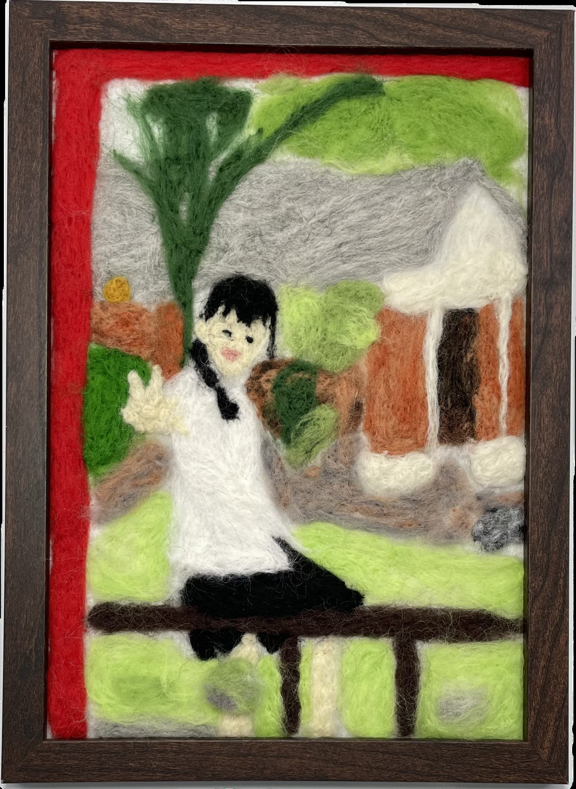

作品名稱：被框來的
作者姓名：劉千瑜
作品主題：smile
作品敘述：這是在我高二當上社團幹部的時候為了發社團IG貼文拍的，我很少有自己在學校的照片，很有紀念價值，而且光復庭的紅色柱子像是邊框一樣框住了笑得很開心的我。
This photo was taken when I became a club officer in my junior year of high school for an Instagram post. I rarely have pictures of myself at school, so this one is very meaningful to me. The red pillars of Guangfu Pavilion frame my joyful smile like a natural border.